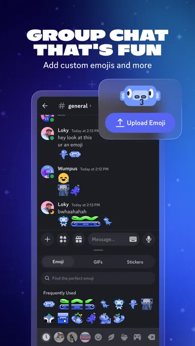

Discord 的 Design.md 主题展示，围绕移动端、通讯与协作组织页面。
Discord mobile product theme.

#5865F2: #5865F2#4752C4: #4752C4#1E1F22: #1E1F22#2B2D31: #2B2D31#313338: #313338#383A40: #383A40#3F4147: #3F4147#F2F3F5: #F2F3F5#B5BAC1: #B5BAC1#949BA4: #949BA4#00A8FC: #00A8FC#23A55A: #23A55A#F0B232: #F0B232#F23F43: #F23F43#EB459E: #EB459Edisplay: gg sansbody: gg sansprimary: gg sansmono: gg monofallback: -apple-system,BlinkMacSystemFont,SF Pro Text,Helvetica Neue,Helvetica,Arial,sans-serifhints: gg sans,gg sans,gg monocontrol: 8pxcard: 12pxpreview: 16pxpill: 9999pxcircle: 50%scale: 0px,4px,8px,12px,16px,50%source: design-mdbase: 4pxscale: 4px,8px,12px,16px,20px,24px,32px,40px,48px,56px,72pxsource: design-md